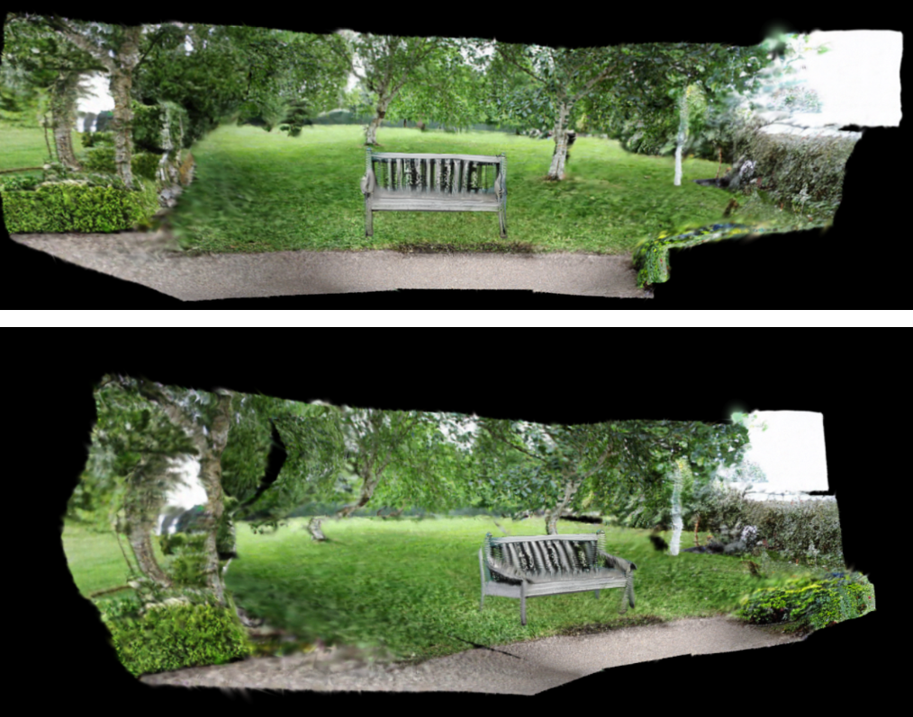

ControlScene
사용자 설명을 통한 단일 이미지에서 동적 3D 장면으로의 조건부 제어
단일 2D 이미지에서 객체(Object)와 배경(Background)을 분리하여 독립적으로 3D로 복원하고, 이를 다시 통합하여 Occlusion(가림 현상) 없는 고품질 3D 장면을 생성하는 AI 파이프라인을 연구했습니다.
- 객체 분리:Segment Anything Model(SAM)을 활용해 사용자가 텍스트로 지정한 객체의 마스크를 생성
- 배경 복원: Stable Diffusion 기반의 인페인팅(Inpainting) 기술로 원본 이미지에서 객체가 제거된 영역을 자연스럽게 복원
- 독립적 3D 재구성: 분리된 객체와 복원된 배경 이미지를 각각 Multi-view Diffusion Model, Gaussian Splatting 기법을 통해 고품질 3D 모델로 생성
- 장면 통합 및 제어: 생성된 3D 배경과 3D 객체를 다시 합성하고, 사용자가 객체의 위치, 크기, 회전 등을 동적으로 제어할 수 있는 인터랙티브 3D 환경을 구축
Python, Pytorch, SAM, stable diffusion model, MVDream, ImageDream ..